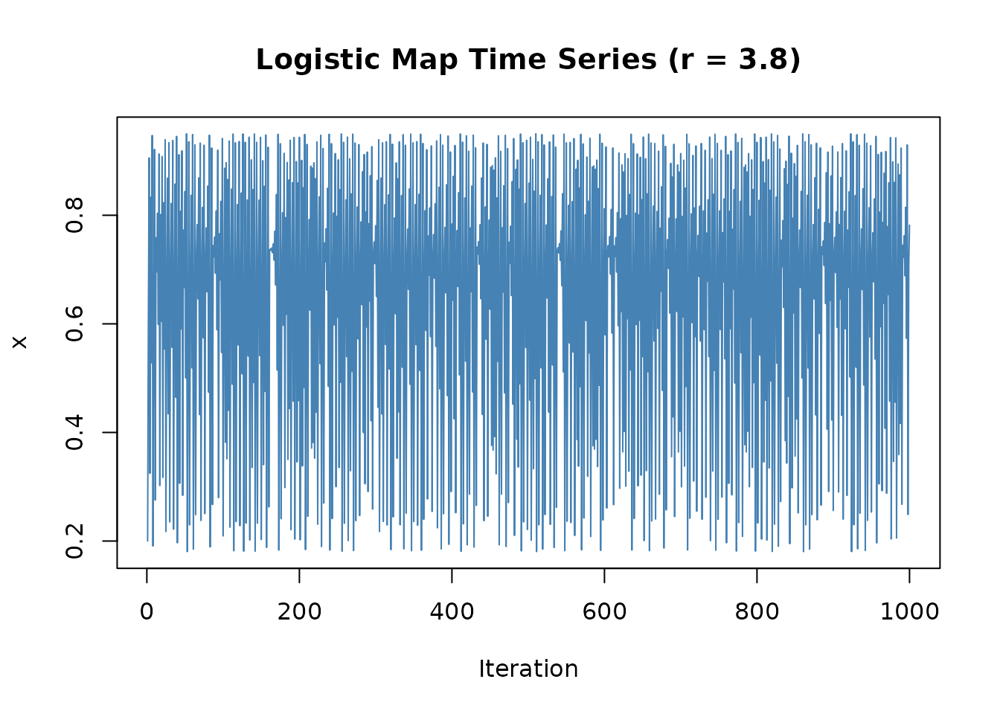
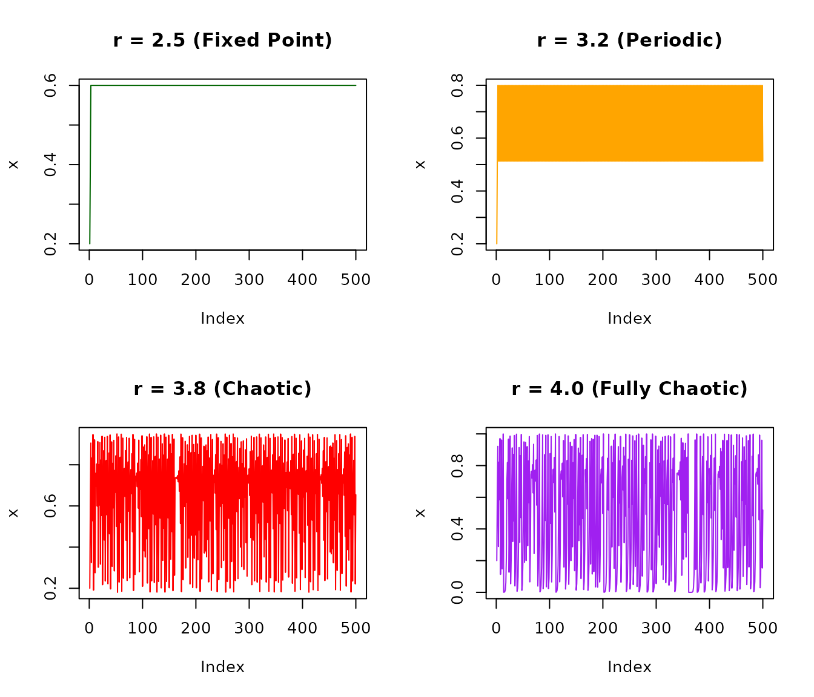
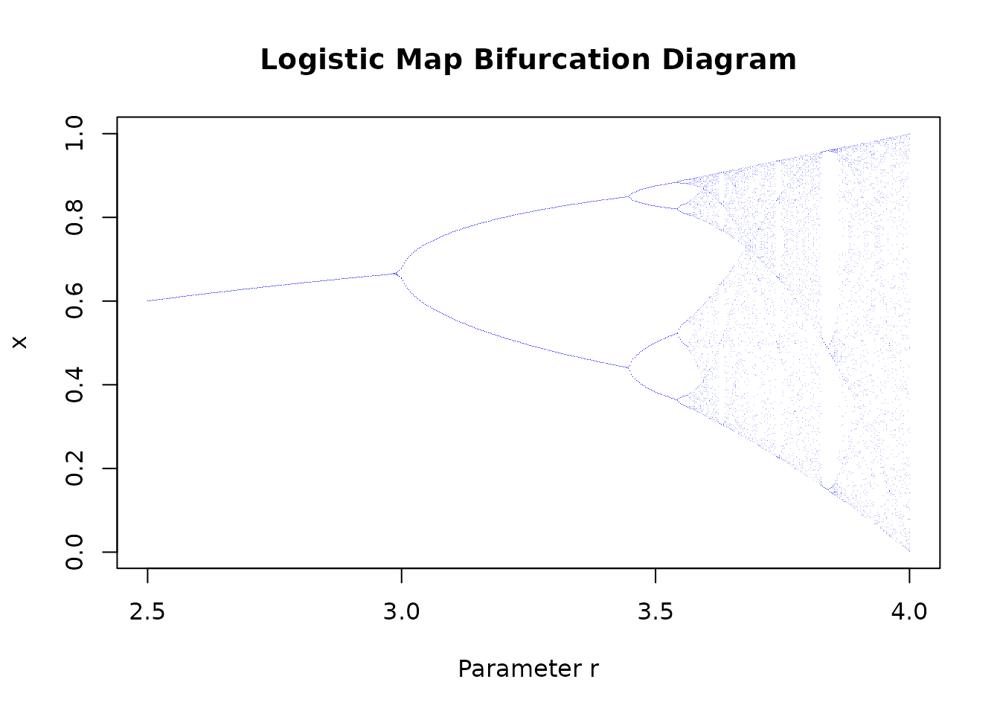
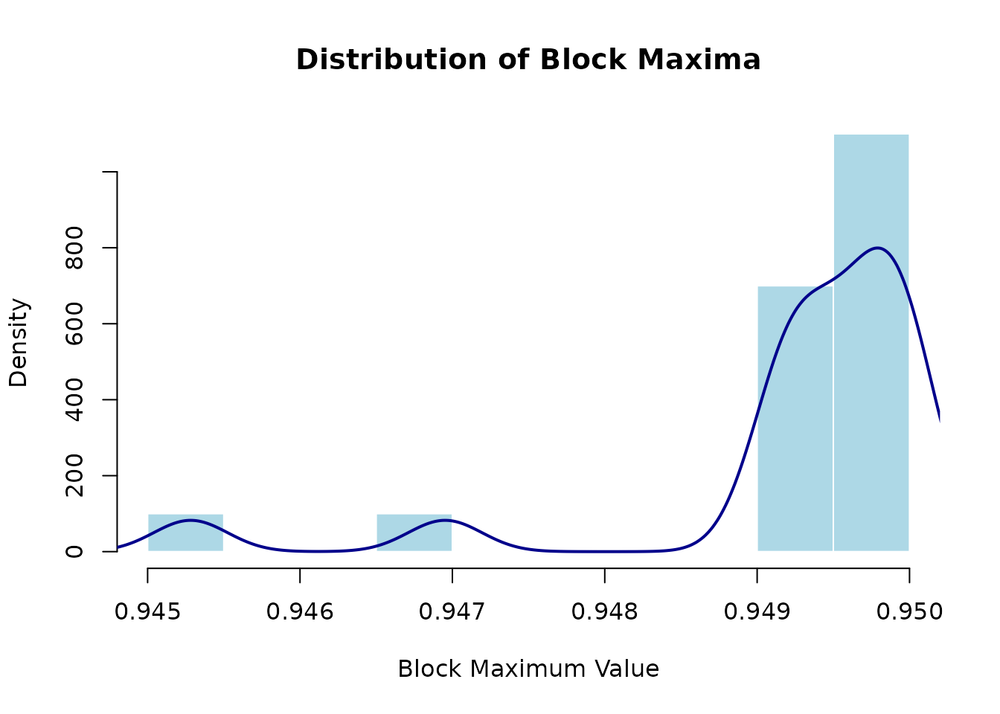
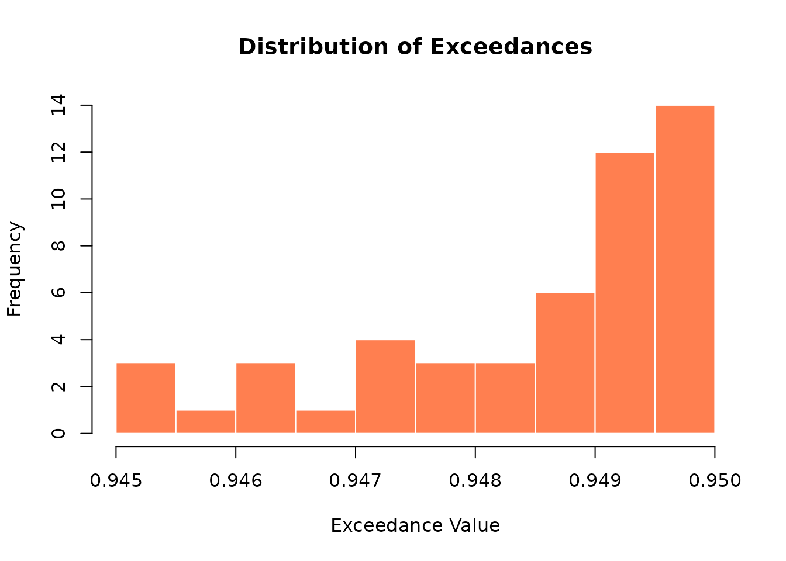
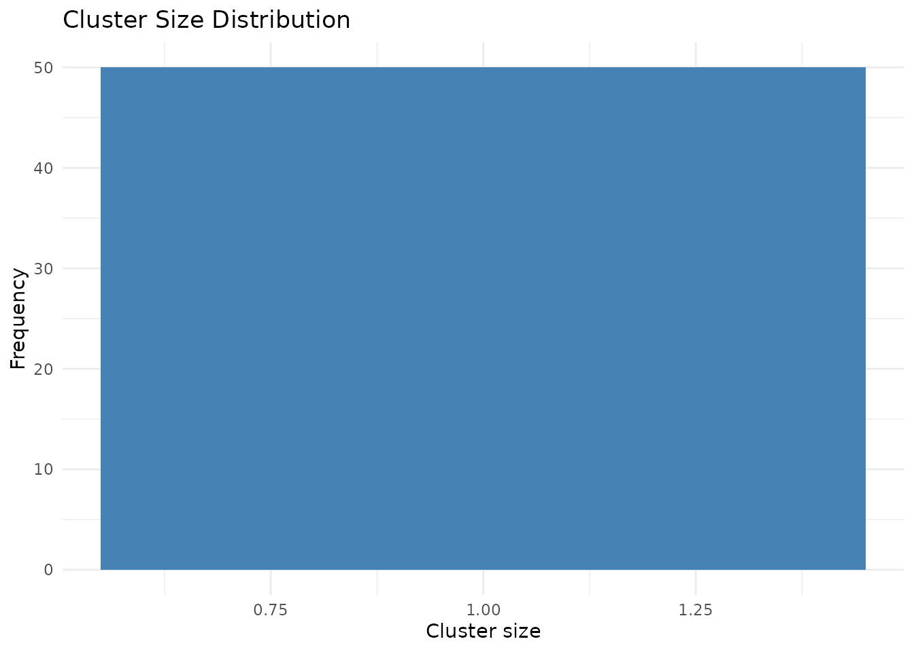
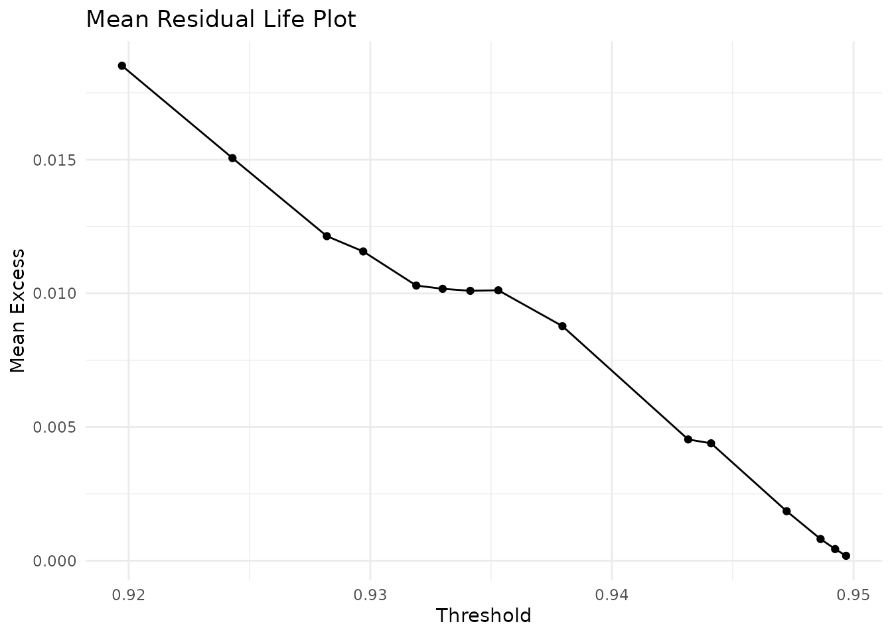
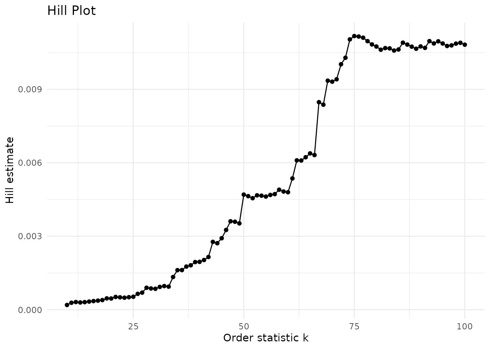
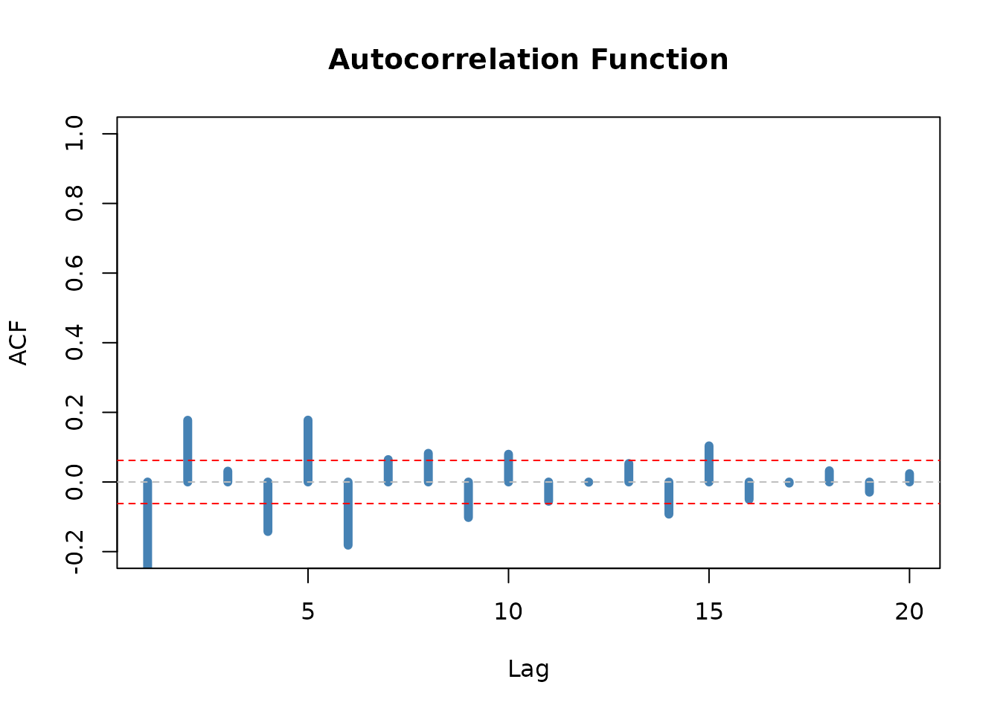

Getting Started with chaoticds
Diogo Ribeiro
2026-09-18
Source:vignettes/getting-started.Rmd
getting-started.RmdWelcome!
This vignette provides a gentle introduction to the
chaoticds package. You’ll learn:
- How to simulate chaotic dynamical systems
- How to perform extreme value analysis
- How to estimate the extremal index
- How to interpret results and create visualizations
Estimated time: 15-20 minutes
What is chaoticds?
The chaoticds package provides tools for analyzing
extreme events in chaotic dynamical
systems.
Why is this important?
Chaotic systems appear everywhere:
- Climate dynamics: Temperature extremes, hurricanes
- Financial markets: Market crashes, volatility spikes
- Turbulent flows: Extreme velocities in fluids
- Biological systems: Population dynamics
Traditional statistical methods assume independence, but extreme events in chaotic systems tend to cluster together. The extremal index θ quantifies this clustering.
Installation
# From GitHub (development version)
devtools::install_github("DiogoRibeiro7/chaotic-dynamical-systems")
# From CRAN (when available)
install.packages("chaoticds")Load the package:
Part 1: Simulating Chaotic Dynamics
The Logistic Map
The logistic map is one of the simplest chaotic systems:
Let’s simulate it!
# Generate 1000 iterations with r = 3.8 (chaotic regime)
series <- simulate_logistic_map(n = 1000, r = 3.8, x0 = 0.2)
# Visualize
plot(series, type = "l", main = "Logistic Map Time Series (r = 3.8)",
xlab = "Iteration", ylab = "x", col = "steelblue")
What do we see?
- No apparent pattern
- Irregular fluctuations
- This is deterministic chaos!
Understanding the Parameter r
The dynamics change dramatically with r:
par(mfrow = c(2, 2))
# r = 2.5: Convergence to fixed point
series1 <- simulate_logistic_map(500, r = 2.5, x0 = 0.2)
plot(series1, type = "l", main = "r = 2.5 (Fixed Point)", ylab = "x", col = "darkgreen")
# r = 3.2: Period-2 oscillation
series2 <- simulate_logistic_map(500, r = 3.2, x0 = 0.2)
plot(series2, type = "l", main = "r = 3.2 (Periodic)", ylab = "x", col = "orange")
# r = 3.8: Chaos
series3 <- simulate_logistic_map(500, r = 3.8, x0 = 0.2)
plot(series3, type = "l", main = "r = 3.8 (Chaotic)", ylab = "x", col = "red")
# r = 4.0: Fully chaotic
series4 <- simulate_logistic_map(500, r = 4.0, x0 = 0.2)
plot(series4, type = "l", main = "r = 4.0 (Fully Chaotic)", ylab = "x", col = "purple")
Bifurcation Diagram
Visualize how dynamics change across parameter values:
# Generate bifurcation data
r_values <- seq(2.5, 4, length.out = 500)
bif_data <- logistic_bifurcation(r_values, n_iter = 300, discard = 250)
# Plot
plot(bif_data$r, bif_data$x, pch = ".", cex = 0.3,
main = "Logistic Map Bifurcation Diagram",
xlab = "Parameter r", ylab = "x",
col = rgb(0, 0, 1, 0.3))
Interpretation:
- r < 3: Single values (fixed points)
- 3 < r < 3.57: Branching pattern (period doubling)
- r > 3.57: Dense cloud (chaos)
Part 2: Extreme Value Analysis
Now let’s analyze extreme events in our chaotic time series.
Method 1: Block Maxima
Divide the series into blocks and extract the maximum from each:
# Use chaotic series from r = 3.8
block_size <- 50
bm <- block_maxima(series, block_size)
cat("Original series length:", length(series), "\n")
#> Original series length: 1000
cat("Number of block maxima:", length(bm), "\n")
#> Number of block maxima: 20
cat("Block maxima range: [", round(min(bm), 3), ",", round(max(bm), 3), "]\n")
#> Block maxima range: [ 0.945 , 0.95 ]
# Visualize distribution
hist(bm, breaks = 15, col = "lightblue", border = "white",
main = "Distribution of Block Maxima",
xlab = "Block Maximum Value", prob = TRUE)
lines(density(bm), col = "darkblue", lwd = 2)
Fitting the Generalized Extreme Value (GEV) Distribution
# Fit GEV on a longer deterministic sample so the observed information
# matrix is stable across R/evd versions used by CRAN and CI builders.
gev_series <- simulate_logistic_map(n = 5000, r = 3.8, x0 = 0.2)
gev_fit <- fit_gev(block_maxima(gev_series, block_size = 50))
# Display results
print(gev_fit)
#> <chaotic_model>
#> Model: gev
#> Method: evd::fgev
#> Parameters:
#> loc scale shape
#> 0.947400 0.002132 -0.689030Interpretation:
- Location (μ): Center of the distribution
- Scale (σ): Spread of the distribution
-
Shape (ξ): Tail behavior
- ξ > 0: Heavy tail (Fréchet)
- ξ = 0: Light tail (Gumbel)
- ξ < 0: Bounded tail (Weibull)
Method 2: Peaks Over Threshold (POT)
Instead of blocks, extract all values above a high threshold:
# Select 95th percentile as threshold
threshold <- quantile(series, 0.95)
cat("Threshold:", round(threshold, 4), "\n")
#> Threshold: 0.9441
# Extract exceedances
exc <- exceedances(series, threshold)
cat("Number of exceedances:", length(exc), "\n")
#> Number of exceedances: 50
cat("Exceedance proportion:", length(exc) / length(series), "\n")
#> Exceedance proportion: 0.05
# Visualize
hist(exc, breaks = 10, col = "coral", border = "white",
main = "Distribution of Exceedances",
xlab = "Exceedance Value")
Part 3: The Extremal Index
What is the Extremal Index?
The extremal index θ ∈ (0, 1] measures clustering of extreme events:
- θ = 1: Extremes occur independently (like IID data)
- θ < 1: Extremes cluster together (typical in chaotic systems)
- θ = 0.5: On average, extremes come in pairs
Estimating θ
# Runs estimator
run_length <- 2
theta_runs <- extremal_index_runs(series, threshold, run_length)
cat("\nExtremal Index Estimate (Runs Method):\n")
#>
#> Extremal Index Estimate (Runs Method):
cat("θ =", round(theta_runs, 4), "\n")
#> θ = 1
cat("Interpretation:",
ifelse(theta_runs < 0.7, "Strong clustering",
ifelse(theta_runs < 0.9, "Moderate clustering", "Weak clustering")),
"\n")
#> Interpretation: Weak clusteringUnderstanding Clusters
# Identify clusters of exceedances
sizes <- cluster_sizes(series, threshold, run_length)
cat("\nCluster Statistics:\n")
#>
#> Cluster Statistics:
cat("Number of clusters:", length(sizes), "\n")
#> Number of clusters: 50
cat("Mean cluster size:", round(mean(sizes), 2), "\n")
#> Mean cluster size: 1
cat("Max cluster size:", max(sizes), "\n")
#> Max cluster size: 1
# Visualize cluster sizes
if (length(sizes) > 0) {
cluster_hist <- cluster_histogram(sizes)
print(cluster_hist)
}
Bootstrap Confidence Intervals
Get uncertainty estimates for θ:
# This takes ~30 seconds
boot_result <- bootstrap_extremal_index(
series,
threshold,
run_length = 2,
B = 1000 # 1000 bootstrap samples
)
cat("Point estimate:", round(boot_result$estimate, 4), "\n")
cat("95% CI: [", round(boot_result$ci[1], 4), ",",
round(boot_result$ci[2], 4), "]\n")Part 4: Threshold Selection
Choosing the right threshold is crucial! Too low → bias. Too high → high variance.
Mean Residual Life Plot
# Compute MRL for various thresholds
thresholds <- quantile(series, seq(0.85, 0.99, by = 0.01))
mrl_data <- mean_residual_life(series, thresholds)
# Create MRL plot
mrl_plot(mrl_data)
How to interpret:
- Look for linear pattern in upper tail
- Choose threshold where linearity begins
- Trade-off: higher threshold = fewer exceedances
Hill Plot
# Compute Hill estimates
k_values <- 10:100
hill_data <- hill_estimates(series, k_values)
# Create Hill plot
hill_plot(hill_data)
How to interpret:
- Look for stable region (plateau)
- Estimate tail index from plateau
- More stable = better threshold choice
Part 5: Diagnostic Checks
Autocorrelation Function
Check for serial dependence:
# Compute ACF
lags <- 1:20
acf_values <- acf_decay(series, lags)
# Plot
plot(lags, acf_values, type = "h", lwd = 6, col = "steelblue",
main = "Autocorrelation Function",
xlab = "Lag", ylab = "ACF",
ylim = c(-0.2, 1))
abline(h = 0, col = "gray", lty = 2)
abline(h = c(-1.96/sqrt(length(series)), 1.96/sqrt(length(series))),
col = "red", lty = 2)
Part 6: Complete Workflow
Put it all together with run_demo():
# Comprehensive analysis
results <- run_demo(
n = 2000,
r = 3.8,
x0 = 0.2,
block_size = 50,
threshold_q = 0.95,
output_report = FALSE
)
# Explore results
names(results)
#> [1] "series" "threshold" "diagnostics"
#> [4] "block_maxima" "gev_fit" "exceedances"
#> [7] "gpd_fit" "extremal_index" "cluster_sizes"
#> [10] "cluster_summary" "acf" "mixing"
# Access components
summary(results$gev_fit)
print(results$extremal_index)Next Steps
Learn More
- 📖
vignette("estimating-theta-logistic"): Deep dive into extremal index - 📖
vignette("block-maxima-vs-pot-henon"): Compare EVT methods - 📖
vignette("multivariate-analysis"): Multi-dimensional systems - 📖
vignette("performance-optimization"): Speed up your analysis
Try Different Systems
# Hénon map (2D chaotic attractor)
henon <- simulate_henon_map(n = 5000, a = 1.4, b = 0.3)
plot(henon$x, henon$y, pch = ".", cex = 0.5,
main = "Hénon Attractor")
# Tent map
tent <- simulate_tent_map(n = 1000, r = 2, x0 = 0.1)
# Lozi map
lozi <- simulate_lozi_map(n = 5000)Getting Help
-
Function documentation:
?simulate_logistic_map -
All vignettes:
browseVignettes("chaoticds") - Package website: https://diogoribeiro7.github.io/chaotic-dynamical-systems/
- Report issues: GitHub Issues
References
Key Papers:
Coles, S. (2001). An Introduction to Statistical Modeling of Extreme Values. Springer.
Freitas, A. C. M., Freitas, J. M., & Todd, M. (2010). Hitting time statistics and extreme value theory. Probability Theory and Related Fields, 147(3-4), 675-710.
Leadbetter, M. R. (1983). Extremes and local dependence in stationary sequences. Zeitschrift für Wahrscheinlichkeitstheorie und verwandte Gebiete, 65(2), 291-306.
Further Reading:
- Embrechts, P., Klüppelberg, C., & Mikosch, T. (1997). Modelling Extremal Events. Springer.